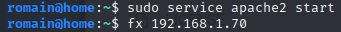

-----
Start (for session) :
service apache2 start
service ssh start
service postgresql start
-----
Stop :
service apache2 stop
service ssh stop
service postgresql stop
-----
Permanently enable :
systemctl enable apache2
systemctl enable ssh
systemctl enable postgresql
-----
(ifconfig for ip) 192.168.1.70
